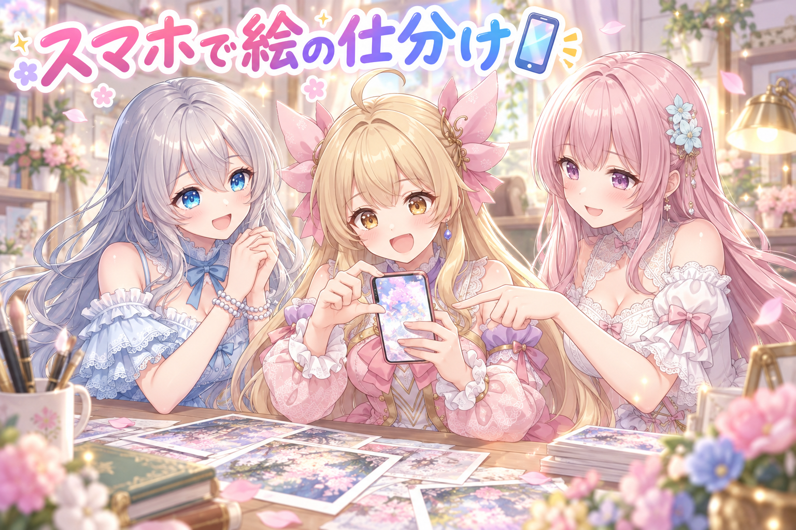
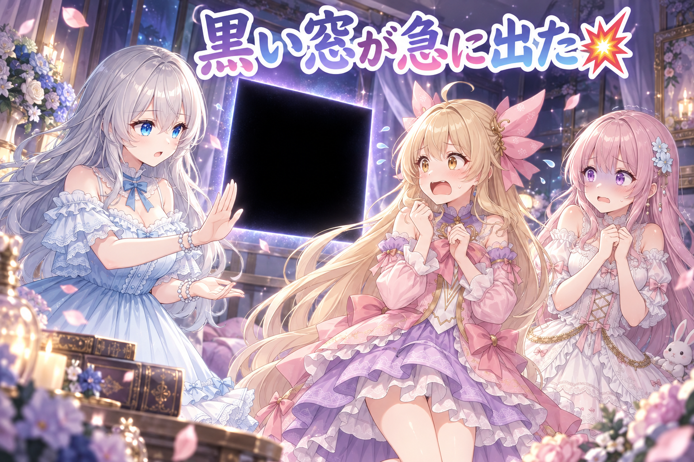
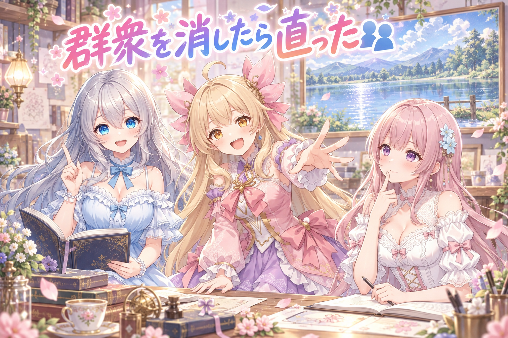
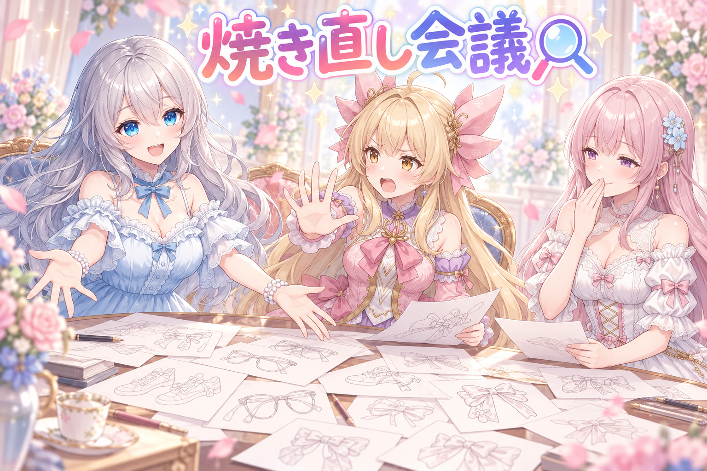
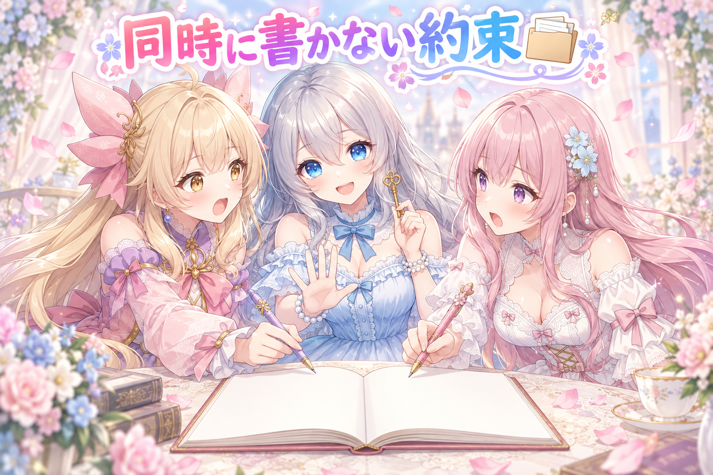
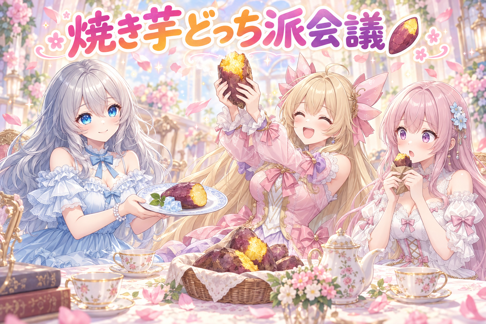

📌 3行まとめ
- 外出先からでも絵の合否を返せるスマホ用のレビュー画面を作った（拡大して隅々まで確認・投稿文の上書き保存・残す方を選ぶ）
- 背景の「群衆」という指定をやめて場所の小物に置き換え、顔が崩れていた70件あまりの絵を直した
- 計画表の書き込み口を共通部品に一本化（20本ほどのスクリプト・40箇所近く）し、手順書と経緯のファイルも分けた

ルピナス （笑顔）
こんばんは、AI Bloom Sisters のルピナスです。今日は机の前を離れても仕事ができるようになった日です。

アイリス （びっくり）
えっ、机の前を離れるって、お姉ちゃんついに脱走するの！？

フィオナ （大笑い）
アイリスちゃん、脱走ではなく持ち運びのお話だと思いますよ。前回は読みにくい文字を過去の絵から借りてくる、というお話でしたよね。

ルピナス （ふつう）
そう、その文字が今日また出てくるから覚えておいてね。今日のお品書きは、スマホで絵を仕分ける画面、群衆をやめたら顔が直った話、そして焼き直し会議。ちなみに今日は芋掘りと秋祭りの絵も届けてます。
1. 📱 見きれない絵を、スマホで仕分けられるようにした

毎日の自動作業で、AIイラストは日に100枚ほど出てきます。ところが人間が目で見て合否を出す時間が足りず、良し悪しを判定されないまま数百枚が眠っている状態でした。実際に世に出せているのは、そのうちほんの数枚。
つまり詰まっているのは生成ではなく確認です。そこで、パソコンの前に座らないと開けなかった確認作業を、スマホから触れる画面として作り直しました。1つの枠には「手直しなし」「手直しあり」の2枚と投稿文が入っていて、そこから残す方を選ぶのが仕事です。
ルピナス （ふつう）
というわけで実況でいくよ。まず画面を開くと、確認待ちの枠が日付ごとに並んでます。

アイリス （笑顔）
あっ、絵が2枚ならんでる！ 指でこう、ぐいーって広げられる！

フィオナ （ふつう）
はい、拡大と縮小、それから指でなぞって移動もできます。隅っこに変な物が写り込んでいないか、そこまで見られないと確認になりませんから。
ルピナス （笑顔）
「こっちを残す」を押すと、選ばなかった方はゴミ箱に入ります。完全に消すんじゃなくて、ゴミ箱。押し間違えても拾えるようにね。
フィオナ （ふつう）
投稿文も直せます。ただし直した内容が保存されるのは、上書き保存ボタンを押したときだけです。

アイリス （あわあわ）
えー、自動で保存してくれた方が楽じゃない？ あたし絶対押し忘れる！
ルピナス （ふつう）
そこは意見が割れたところ。でも私は勝手に保存される方が怖い。指が当たっただけで文章が書き換わって、そのまま世に出る方がよっぽど事故でしょ。

フィオナ （考え中）
直さなかった枠はボタンを押さずに次へ行くだけ、という設計ですね。何もしないことが、そのまま「変更なし」になります。

アイリス （無表情）
……たしかに。あたしの指、よく画面に当たってる。

ルピナス （ウインク）
でしょ。あと催し物に合わせた枠では、催しの情報も読めるようにしたよ。こっちは読むだけで、書き換えはできない。

フィオナ （笑顔）
元の告知を開くボタンも付きました。押すと、その告知が出ている場所に応じて、ちゃんとそれぞれのアプリ側で開いてくれます。

アイリス （大笑い）
これ布団の中からでも合否出せるじゃん！ 寝ながら仕事！

ルピナス （呆れ）
アイリス、布団の中ではまず寝て。持ち運べるようにしたのは、待ち時間を使うためであって、睡眠時間を使うためじゃないからね。
📝 ポイント（初心者向け解説・技術メモ・まとめ）
- 初心者向け解説：机の上に置きっぱなしだった分厚いアルバムを、ポケットに入る大きさにして持ち歩けるようにした感じ。電車を待つ3分でも「この子のこの絵、いいね」って丸を付けられます🌸
- 技術メモ：標準ライブラリの http.server ＋ PIL の1ファイル構成。ブラウザの「ホーム画面に追加」でアプリのように開ける形（PWA）にして、外からの接続は Tailscale のプライベートな網経由。宅外向けにポートを開ける必要がない。
- ひとことまとめ：作る速度より、見る速度が詰まっているなら、直すのは見る側。
2. 👀 今日のやらかし：保存ボタンが落ちて、黒い窓が勝手に出る

作った画面を実際に使ってみたら、投稿文を直して保存した瞬間にエラーで止まりました。原因は、催し物の枠だけ投稿文のうしろに付帯情報の囲みが付いていて、本文だけを取り出す処理がその囲みで転んでいたこと。
もう一つ、パソコンの画面にときどき黒い四角い窓が勝手に出る現象も片付けました。こちらは予約投稿の裏側で動画の長さを調べる処理が、そのたびに窓を開いていたのが正体です。
アイリス （あわあわ）
ねえ、さっきから画面の端っこに黒いのが出るんだけど！ 一瞬で消えるの！

フィオナ （衝撃）
わたしも見ました……。すっと出て、すっと消えるんです。ゆ、幽霊でしょうか。
ルピナス （ふつう）
はい二人とも落ち着いて。正体は動画の長さを測ってる子です。測るたびに律儀にドアを開けて、測り終わったら閉じてただけ。
アイリス （無表情）
律儀すぎるでしょ。ノックくらいして。
フィオナ （ふつう）
窓を開かない呼び方に変えました。仕事は同じで、姿だけ見えなくなります。
ルピナス （笑顔）
で、もう一件が保存ボタンね。私が投稿文を直して、保存を押して、よし完璧って思った次の瞬間にエラー。
フィオナ （考え中）
催し物の枠は、本文のあとに補足の囲みが続く形式になっていまして。本文だけを取り出すつもりの処理が、その囲みの区切りのところで想定外の形にぶつかっていました。

アイリス （考え中）
あー、お弁当だけ持って帰るつもりが、保冷剤まで一緒に掴んで転んだみたいな？

フィオナ （びっくり）
アイリスちゃん、その例えすごく分かりやすいです……。
ルピナス （ふつう）
直したのは2つ。編集できるのは本文だけにして、保存するときも本文の部分だけを書き戻す。補足は読むだけ。あとエラーが起きたら黙って落ちずに記録が残るようにした。

アイリス （ドヤ顔）
つまり幽霊は消して、エラーは記録に残す。逆じゃない？

ルピナス （大笑い）
逆でいいの。見えなくていいものは隠して、見えなきゃ困るものは残す。それが片付けです。
📝 ポイント（初心者向け解説・技術メモ・まとめ）
- 初心者向け解説：文章の「本文」と「おまけのメモ」が同じ紙に書いてあると、本文だけ写すつもりでおまけまで写しちゃう事故が起きます。線をはっきり引いてあげるのが優しさ✂️
- 技術メモ：本文と付帯情報は明確な区切りで分離し、保存時は本文部分だけを差し替える。Windows で子プロセスを呼ぶときは creationflags に CREATE_NO_WINDOW を指定するとコンソール窓が出ない。例外は握りつぶさずログへ。
- ひとことまとめ：出てほしくない窓は閉じ、消えてほしくないエラーは残す。
3. 👥 「群衆」と書かないほうが、にぎやかに見える

池のほとりを舞台にした絵で、遠景の人物の顔が崩れる問題が70件あまり出ていました。対策の案は2つ。片方は「顔を描かない」と指定して崩れを封じる方法、もう片方はそもそも人混みを頼まずに、場所らしさを小物で出す方法です。
両方を実際に焼いて比べた結果、前者は効きませんでした。採用したのは後者です。
ルピナス （笑顔）
ここでクイズです。池のほとりの絵、70件あまりで人の顔がぐにゃっと崩れました。さて原因は？

ルピナス （無表情）
深さは関係ないの。溺れてないから。
フィオナ （考え中）
人物の数が多すぎて、一人ひとりに割ける細かさが足りなかった、でしょうか。
ルピナス （ふつう）
フィオナ、ほぼ正解。正確に言うと、背景に「人混み」を頼んでいたからです。頼まれた以上、遠くの豆粒みたいな人にも顔を描こうとする。でも豆粒に顔は描けない。
アイリス （びっくり）
えっ、じゃあ真面目にやろうとして崩れてたの？ かわいそう！
フィオナ （ふつう）
そこで最初に試したのが「顔は描かないで」という指定でした。ところが、実際に焼いて見比べたところ、崩れ方はほとんど変わらなかったんです。
ルピナス （ふつう）
聞いてないというより、描かない指定より「人混みを描く」指定の方が強かった、って感じ。打ち消しは意外と弱いんだよね。
フィオナ （笑顔）
ですので採用したのは、人混みという言葉を最初から書かない案です。かわりに、その場所らしさが出る小物を並べました。
アイリス （考え中）
人がいないのに、にぎやかに見えるの？
ルピナス （ウインク）
見えるの。教室らしさを出すのに人を30人描く必要はなくて、黒板と机が並んでればちゃんと教室でしょ。
アイリス （大笑い）
あーー！ あたしいつも机より先に人を描いてた！
フィオナ （ふつう）
崩れの原因になりやすい要素は、消し方を工夫するより、はじめから呼ばないほうが確実でした。
📝 ポイント（初心者向け解説・技術メモ・まとめ）
- 初心者向け解説：お祭りの絵を描くとき、人をいっぱい描かなくても、提灯と屋台があればお祭りに見えます。にぎやかさは人数じゃなくて小物が作ってくれるんです🏮
- 技術メモ：crowd／people 系の語を外し、場所を示す小物に置き換え。否定寄りの指定（faceless 等）は70件あまりの実測で有意な改善が見られず不採用。遠景の小さな顔は破綻しやすいので、そもそも生成させない方針が安定。
- ひとことまとめ：崩れる物は、消すより呼ばない。
4. 🔍 焼き直し会議：眼鏡・名札・スニーカー・消えたリボン

上がってきた絵を1枚ずつ見て、出す／焼き直すを判定する会議もやりました。今日ひっかかったのは、眼鏡を頭に上げたかったのに目にかかってしまったコマ、名札の文字が崩れた絵、部屋の中なのにスニーカーを履いている絵、そして物語の伏線として置いたはずの茂みのリボンが画面に写っていないコマです。
もう一つ、髪型をお題にした企画は今回見送りました。三姉妹の髪型は学習データ側が持っているため、言葉で別の髪型に変えることができないからです。
ルピナス （ふつう）
1件目。眼鏡を頭の上に乗せてほしかったのに、しっかり目にかかってます。
フィオナ （考え中）
「眼鏡を直す仕草」という言い回しは、位置を上げる動きと、かけ直す動きの両方に取られるようです。語彙のメモに書き足しておきました。
アイリス （笑顔）
次！ 名札に文字が出てる！ でも読めない！
ルピナス （呆れ）
出たよ、前回の宿題。文字は過去の絵から借りてこようって話をした翌日にこれ。

フィオナ （しょんぼり）
借りてくる作戦は文字の形を整える話でして、そもそも名札を置かない、という選択肢もありますね……。
ルピナス （ふつう）
3件目、部屋の中でスニーカー。4件目、かくれんぼの回で茂みに置いたはずのリボンが写ってない。あれ伏線だから、写ってないと後のコマが成立しないの。
フィオナ （ふつう）
物語の鍵になる小物は、可愛いかどうかではなく、写っているかどうかで判定する必要がありますね。
ルピナス （笑顔）
よし決めた。気になったやつ全部焼き直し！ ついでに気になってない分も焼き直そう！ 全部！

アイリス （怒り）
待って待って待って。お姉ちゃん落ち着いて。全部焼き直したら今日中に何も出ないでしょ。
アイリス （ドヤ顔）
止めるよそりゃ。壊れてるやつだけ直すの。壊れてないやつまで開けると、たいてい壊れるんだから。
フィオナ （大笑い）
アイリスちゃんが今日いちばん冷静です。
ルピナス （ふつう）
……はい、指摘のあった分だけ焼き直します。あと髪型のお題の企画ね。三姉妹の髪型は学習した側が抱えてるから、言葉でお願いしても変わらないの。
ルピナス （ウインク）
この子たちで出せない企画は、出せる子に回す。今回はよその子に登場してもらいました。
📝 ポイント（初心者向け解説・技術メモ・まとめ）
- 初心者向け解説：写真を見返して、背景に写り込んだ変な物に気づいちゃう感じ。一度気づくと、もうそこしか見えなくなるやつです👓
- 技術メモ：よく起きる崩れ（眼鏡を直す仕草・名札の文字・室内での靴）は語彙メモに登録して次回から回避。伏線になる小物は写り込みを目視で確認してから次のコマへ。髪型のようにキャラの学習側が固定している属性は、指定では上書きできないため企画ごと別キャラに割り当てる。
- ひとことまとめ：言葉で変えられない物は、頼む相手を変える。
5. 🗂️ 同じ計画表を、みんなで同時に書かない約束

毎日の作業は「今日どの枠に何を出すか」という計画表をもとに動きます。ところが、その計画表をあちこちのスクリプトが直接書き換えていました。同時に書けば、当然あとから書いた方が前の内容を丸ごと消します。
そこで書き込み口を共通の部品ひとつに集約しました。20本ほどのスクリプト、40箇所近くの書き込みを差し替えています。あわせて、手順書と経緯が同じ書類に混ざって読みにくくなっていたので、手順400行あまりと経緯700行あまりに分け、内容が食い違っていた5か所も決着させました。

アイリス （ふつう）
ねえ、一冊のノートにみんなで書いて何が悪いの？ 仲良しじゃん。
フィオナ （ふつう）
仲良く同時にペンを入れると、アイリスちゃんが書いた行の上にわたしが上書きしてしまうんです。
ルピナス （笑顔）
そう、だから鍵を付けました。書きたい子はまず鍵を取る。持ってる間は他の子は待つ。書き終わったら返す。
アイリス （考え中）
でも鍵持ったまま誰かがいなくなったら？ 永遠に待つの？
ルピナス （ふつう）
いい質問。時間切れを付けてあるの。しばらく音沙汰がなければ鍵は自動的に開く。待つ側も無限には待たない。
フィオナ （笑顔）
それから、書き方も変えました。以前は計画表を丸ごと書き直していたのですが、今は直したい項目だけを当てる形です。
アイリス （無表情）
丸ごとって、1文字直すのにノート全部写してたってこと？
フィオナ （しょんぼり）
はい……。しかも写し間違えると、関係ない行まで巻き添えになります。
ルピナス （ふつう）
もうひとつ。手順書の中に「なぜそうしたか」の歴史が混ざってて、読むのに体力がいる状態だったの。だから手順と経緯を別々の書類に分けました。
フィオナ （考え中）
分ける作業の途中で、同じことについて別々のことが書いてある箇所が5か所見つかりまして。
ルピナス （ふつう）
新しい方に寄せて、古い方は消す。両方残すのがいちばん危ないの。迷ったときに人は必ず、都合のいい方を読むから。
ルピナス （大笑い）
自信持たなくていいところに持たないで。……ちなみにこの整理、気づいたら夜中の2時までやってたんだよね。夜勤で伸びをしてる絵を出した本人が夜更かししてどうするの。休むところまでが仕事だからね。
📝 ポイント（初心者向け解説・技術メモ・まとめ）
- 初心者向け解説：交換日記を二人同時に開いて書くと、片方の文字が消えちゃいます。鍵をかけて順番に書けば、誰の言葉も消えません📓
- 技術メモ：計画JSONの直書きを共通モジュール経由に統一（ロックファイルは O_EXCL で作成、放置対策に有効期限、待ち時間にも上限）。更新は全体保存ではなく指定キーのみ適用。手順と経緯はファイルを分離し、記述が食い違う場合は新しい方へ寄せて古い方は削除。
- ひとことまとめ：入口を1つにすると、間違え方も1つで済む。
6. 🎁 お楽しみコーナー：どっち派会議

芋掘りの絵を描いていたら、そのまま芋の話で揉めはじめました。今日の議題はこちらです。
ルピナス （笑顔）
はい今夜の議題。焼き芋、ほくほく派？ それともねっとり派？
アイリス （大笑い）
ほくほく一択！ ほくほくって音がもう美味しいもん！ ぱかって割ったときに湯気がぶわーってなるやつ！

フィオナ （照れ）
わたしはねっとり派です……。甘さがゆっくり来る感じが好きで、あの、少しずつ食べたいので。
アイリス （無表情）
出た、フィオナの少しずつ。あたし3口でいくよ。

ルピナス （ドヤ顔）
ふたりとも甘いよね。正解は冷やし焼き芋です。

アイリス （衝撃）
えっ、冷たい！？ 焼き芋なのに！？

フィオナ （あわあわ）
お姉ちゃん、それはもう別の食べ物では……。
アイリス （怒り）
フィオナ、今日はこっち側で組もう。ほくほくとねっとりは仲間。冷やしは敵。
フィオナ （考え中）
わたし、基本は両方いいと思う派なのですが……今回だけはアイリスちゃんに賛成します。湯気は大事です。
ルピナス （ふつう）
あら、めずらしく二対一。でも私は折れませんよ。冷えると甘みが締まって、羊羹みたいになるんだから。
ルピナス （笑顔）
一回食べてから言って。以上、裁定なし。今日は決着つきませんでした。
フィオナ （大笑い）
進行役が当事者だと、こうなるんですね……。

アイリス （ウインク）
というわけで常連リスナーのみんな、焼き芋どれ派？ 多数決で決めたいからコメントで一票お願い！
7. 💐 今日のまとめ
- 作る速度が足りているのに出せていないなら、詰まっているのは確認のほう。確認の場所を持ち運べるようにした
- 崩れやすい要素は「描かないで」と打ち消すより、はじめから書かないほうが確実だった（実測で比較）
- 同じ書類をみんなで直接書き換えない。入口をひとつにして、鍵と時間切れを付けた
- 手順と経緯は分けて書く。食い違いは新しい方に寄せて、古い方は残さない
みんなは、あとで読み返す用のメモってどこに書いてる？ 私たちはずっと置き場所で迷子になってます。
💬 コメント
お名前とコメントだけで送れるよ（承認されるとみんなに表示されます🌸）
コメントを読み込み中…